Our goal for this project was to be able to render iridescence effects in order to extend our current pathtracer’s ability to render more nuanced and unique scenes. We accomplished this by sampling the RGB color channels to generate an associated color when rays are generated in our scene and then leveraging thin-film interference to create iridescence effects. We updated the Fresnel term with a complex reflectance term to account for bounces within the thin-film between the object material and air. Using this approach provided us with controllable parameters to toggle and manipulate the iridescence on objects via manipulating the thin-film’s thickness and index of refraction.
Iridescent effects due to thin-films are a result of phase shifts between different paths in a multi-layer structure. Considering a simple air-thinfilm-material model, an entering light wave may immediately reflect off the air-thin-film interface or enter and bounce within the thin-film one or more times before exiting into air. Light is made up of multiple wavelengths, which take any of the previously described paths, leading to constructive or destructive interfere. Waves that destructively interfere are canceled out, and waves that constructively interfere are amplified (Fig. 1). This results in the multi-color appearence of iridescence that changes based on film thickness, film index of refraction, viewing angle, and more. In order to render iridescence, our pathtracer must implement spectral ray tracing, and we also need to model the thin-film material with a wavelength-dependent BRDF.
| 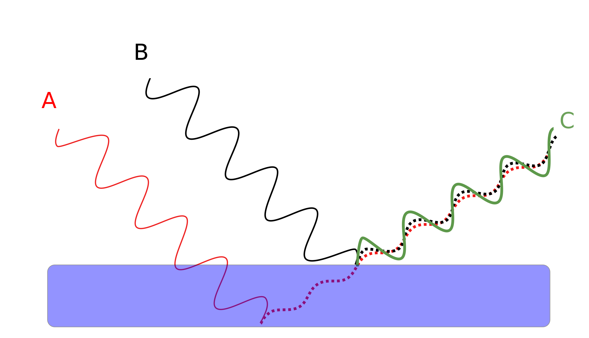 | 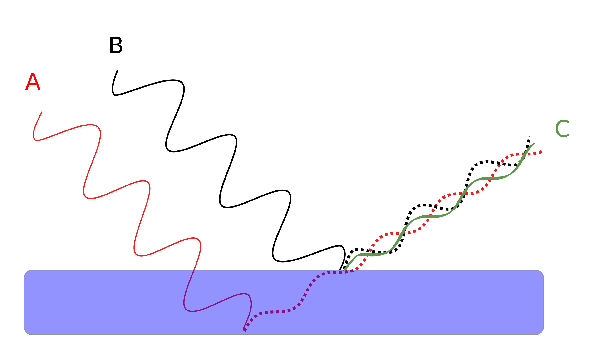 |
Refactoring our Project 3-1/3-2 Pathtracer code, we added a wavelength attribute to our Ray class. Everytime we generate a random ray to shoot out from the camera, the wavelength attribute is generated as well. This Vector3D holds a randomly sampled wavelength for each RGB color channel. In order to get reasonable samples per color channel, we approximated the spectral response curves of each human cone cell (Fig. 2) as Gaussian distributions. Based on the curves, we sampled from the following distributions for each color channel: \(R \sim \mathcal{N}(600, 25)\), \(G \sim \mathcal{N}(550, 25)\), and \(B \sim \mathcal{N}(450, 15)\). To counteract spectral aliasing, previous iridescence rendering papers (Belcour and Barla 2017) integrate over multiple wavelengths across the spectral response curves. We only sampled 1 wavelength per channel to reduce computation costs, but this was enough to demonstrate iridescence effects.
Now that we modified our ray tracing to include a wavelength parameter, we also need to implement a wavelength-dependent BRDF. For this part, we relied on previous work from Belcour and Barla 2017 and Bacterious 2013 who demonstrated that the Microfacet BRDF model can be used as the foundation for a thin-film interference model. This model is shown in Figure 3, where the external medium is air (\(n_0 = 1.0\)), the intermediate medium is the thin-film, and the internal medium is a microfacet material with arbitrary roughness.
Because we are already able to render microfacet surfaces with our Project 3 Pathtracer, we modified our existing Microfacet BRDF to include the wavelength parameter: \[f = \frac{F(\omega_i , \lambda) \ast G(\omega_o, \omega_i) \ast D(h)}{4 \ast (n \cdot \omega_o) \ast (n \cdot \omega_i)}\] We only need to modify the Fresnel term -- the shadow-masking term and distribution term are left the same.
The Fresnel reflectance term must account for the total reflectance contributions from the waves reflecting off of/exiting the thin-film. Given a wavelength and polarization, reflectance is the ratio of the power of outgoing light to the power of incoming light, where power is proportional to wave amplitude squared. We can thus make use of the Fresnel equations for computing reflected and transmitted wave amplitudes for waves traveling between mediums \(i\) and \(j\). These values are polarization-dependent so we have to decide on the ratio of \(s\) to \(p\) polarized light to use. In this project, we use a 1:1 ratio. The calculated reflectance/transmittance coefficients are:
\[r_s = \frac{n_i \cos{\theta_i} - n_j \cos{\theta_j}}{n_i \cos{\theta_i} + n_j \cos{\theta_j}}\]
\[t_s = \frac{2 n_i \cos{\theta_i}}{n_i \cos{\theta_i} + n_j \cos{\theta_j}}\]
\[r_p = \frac{n_j \cos{\theta_i} - n_i \cos{\theta_j}}{n_i \cos{\theta_j} + n_j \cos{\theta_i}}\]
\[t_p = \frac{2 n_i \cos{\theta_i}}{n_i \cos{\theta_j} + n_j \cos{\theta_i}}\]
We use Snell's law to get \(\theta_1\) and \(\theta_2\) used above. We can also take advantage of the fact that \(R + T = 1\) where \(T\) is transmitted light and calculate transmittance first, which is slightly simpler. We use the above coefficients to find the amplitude of each transmitted component. Because we are only considering paths up to a single bounce off the thinfilm-air interface (up to \(T_1\) in Fig. 3), our transmitted amplitude is \(A = t_{0 \rightarrow 1}t_{1 \rightarrow 2}r_{1 \rightarrow 0}t_{1 \rightarrow 2}\).
Because waves experience phase shifts upon reflection, complex reflection coefficients are needed. Phase shift inversely depends on \(\lambda\) and directly depends on the first-order optical path difference (in parathenses below): \[\psi = \frac{2\pi}{\lambda}(2n_1\delta\cos\theta_1)+\Delta\] where \(\delta\) is film thickness and \(\Delta\) is the sum of 180-degree phase changes as the wave moves from a material with lower index of refraction to one with a higher index of refraction.Putting this all together, and summing across all paths, the final transmittance is \[_T = \frac{n_2 \cos{\theta_2}}{n_0 \cos{\theta_0}} \left | \sum_{k = 0}^\infty A_k e^{i \varphi_k} \right |^2\] For first-order paths, this has a closed form of \[T = \frac{n_2 \cos{\theta_2}}{n_0 \cos{\theta_0}} |\frac{t_{0 \rightarrow 1}t_{1 \rightarrow 2}}{1 - (r_{1 \rightarrow 0}t_{1 \rightarrow 2})e^{i \varphi}}|^2\] We finally calculate \(R\) as \(1-T\). The Fresnel term is calculated separately for each color channel, using the previously sampled wavelength.
Perlin noise was created by Ken Perlin as a way to migrate from seemingly “computer generated” artifacts when rendering images in computer graphics. Specifically, it is a pseudo-random approach to generating noise that can be applied in various use-cases. For our project, we leveraged a 3-dimensional implementation of Perlin noise which is composed of a grid of (pseudo-random) gradient vectors which is used alongside interpolation to obtain a noise value. We used the intersection point of a ray with an object as the 3-dimensional input to the Perlin noise function in order to obtain a random noise value, which was then used to scale the original thickness value specified in the dae file at that sample point. Using the noise to cause variations within the thickness of the thin-film material between the air and the object in question attempts to introduce more nuance in the colors at the sample points while also mitigating a definitive pattern to the iridescence effects. The variations in thickness is what is seen in the real world as external forces would be acting upon the thin-film (for example, a soap layer on a sphere suspended in the air would be affected by gravity).
Another feature that we attempted to implement was Perlin noise so that our iridescence effects would appear more realistic (thin-films are acted upon by external forces, such as gravity which cause the thickness across the film to vary). After incorporating Perlin noise and after many debugging sessions we were not able to get the iridescent effects to render with slight variations of noise to mimic what would be seen in the real world.
Also, we attempted to render soap bubbles. Our approach was to get iridescence to render on transparent objects and surfaces and then manipulate the thin-film thickness and index of refraction to mimic a soap-like texture. To this end, we wanted to change the glass BSDF model in the same way that the microfacet BSDF model was changed. However, we realized that the way that the Fresnel term was used in the glass model was fundamentally different as we had 3 wavelengths for every ray, each producing a separate Fresnel term. After hours of debugging, we decided that we would not be able to succeed in this task with the time remaining.
We really enjoyed working on this project because it provided us with an opportunity to extend our conceptual understandings and knowledge from class to a new and unique project. Specifically, the open-ended nature of this assignment required us to dive deeper into the research process and understand the various technical aspects involved with rendering iridescence (we learned the technical knowledge behind iridescence and were able to replicate that in our project). From a working standpoint, we learned that it was vital that all group members were briefed and up-to-date regarding implementation details; we were able to streamline implementation by working on separate branches when developing different features. We also learned how important it is to monitor call flows rather than visually inspecting our code to identify issues (one of our main sources of error and noise was due to an input parameter being nulled out and passed throughout our implementation. Overall, this project was a great learning experience in regards to working with a group and going through the development cycle for a new topic -- ideation, research, technical design, implementation, completion.
|
|
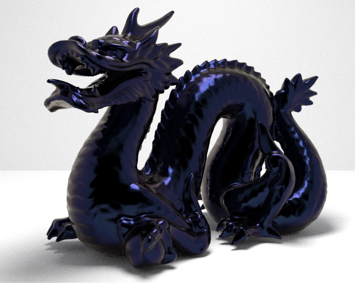
|
|
|
|
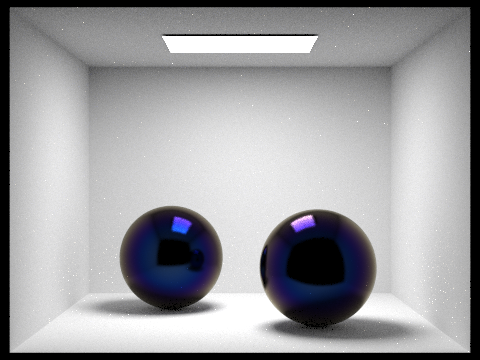
|
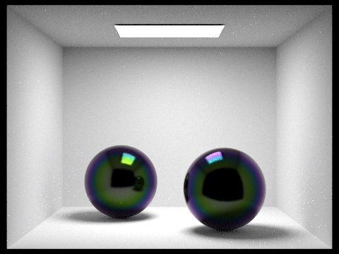
|
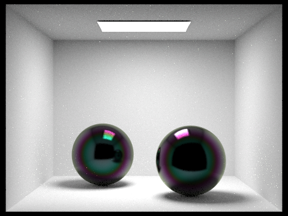
|
|
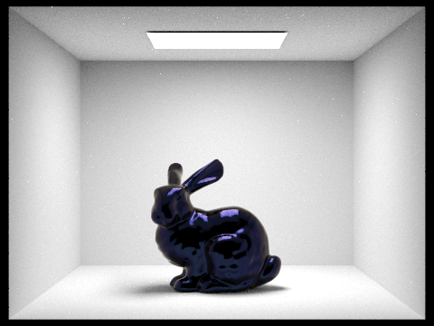
|
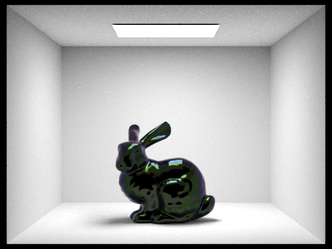
|
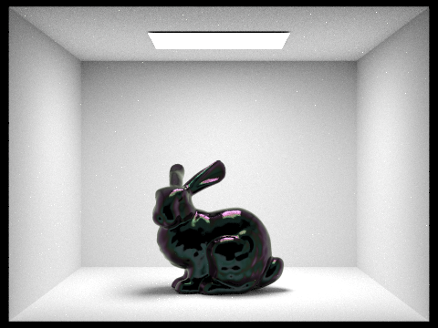
|
|
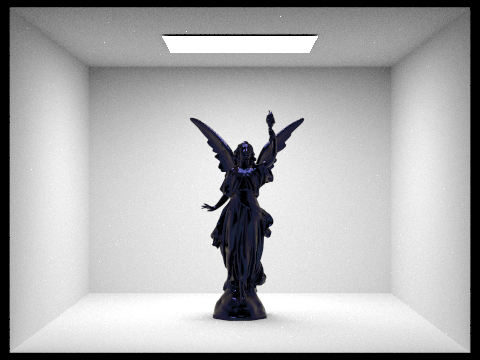
|
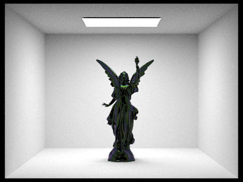
|
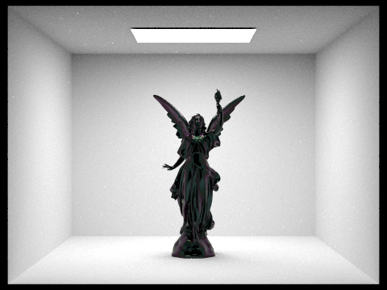
|
The gif above shows that as viewing angle changes, the colors on the dragons shift. This behavior is expected with a proper implementation of iridescence rendering. All images were rendered using 256 samples per pixel, 4 samples per light, and a max ray depth of 3.
Additionally, values for thickness were varied between 250 nm, 550 nm, and 750 nm to achieve different iridescent effects.
Mantej: worked on refactoring code, worked on implementing iridescence, proposal report, milestone report, final report, debugged iridescence, debugged bubble rendering, debugged Perlin noise, debugged merging 3-1, 3-2 code to render the GlassBSDF alongside iridescent changes, experimented with different thickness and index of refraction combinations to find best renders, rendered final images for report
Sean: worked on implementing iridescence, proposal report, milestone report, final report, debugged iridescence
Yun: worked on refactoring code, worked on implementing iridescence, milestone report, final report, debugged iridescence, debugged Perlin noise, refactored implementation to account for complex terms
Trevor: worked on refactoring code, worked on implementing iridescence, proposal report, milestone report, final report, debugged iridescence, combined pathtracer 3-1/3-2 implementations, debugged bubble rendering, debugged Perlin noise, rendered final images for report, formatted presentation slides